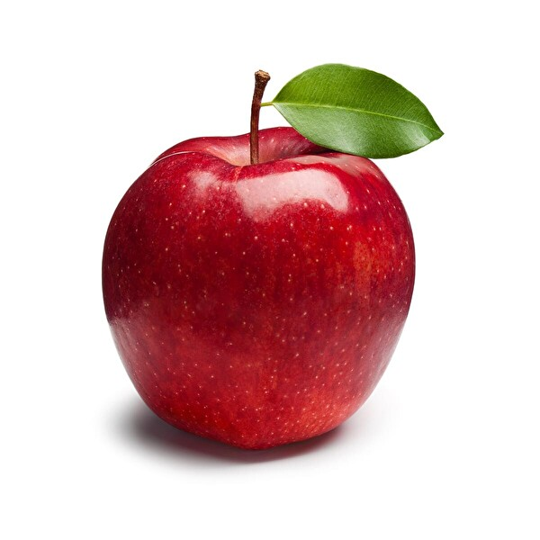

Tanım:Martin Rundkvist (born 4 April 1972) is a Swedish archaeologist who focuses on the Bronze, Iron, and Middle Ages of Scandinavia. He has excavated various sites in Sweden. In a 2011 book, he identified nine possible regional power centres in Östergötland, and attempted to determine where the "Beowulfian mead halls" of the day once stood. Years later at one of these sites, Aska, he uncovered the foundations of a large mead hall, and 22 ornate gold figures that may have represented gods or royals. Rundkvist has also catalogued the finds from Barshalder, the largest prehistoric cemetery on Sweden's Gotland island; excavated the boat grave of a Viking; and analysed both the placement of deposited artefacts in the landscape and the lifestyles of élite Scandinavians during the Middle Ages. Rundkvist authors the blog Aardvarchaeology, which the James Randi Educational Foundation termed "the most-read archaeology blog on the Internet". He is an associate professor at the University of Łódź in Poland. Martin Rundkvist (born 4 April 1972) is a Swedish archaeologist who focuses on the Bronze, Iron, and Middle Ages of Scandinavia. He has excavated various sites in Sweden. In a 2011 book, he identified nine possible regional power centres in Östergötland, and attempted to determine where the "Beowulfian mead halls" of the day once stood. Years later at one of these sites, Aska, he uncovered the foundations of a large mead hall, and 22 ornate gold figures that may have represented gods or royals. Rundkvist has also catalogued the finds from Barshalder, the largest prehistoric cemetery on Sweden's Gotland island; excavated the boat grave of a Viking; and analysed both the placement of deposited artefacts in the landscape and the lifestyles of élite Scandinavians during the Middle Ages. Rundkvist authors the blog Aardvarchaeology, which the James Randi Educational Foundation termed "the most-read archaeology blog on the Internet". He is an associate professor at the University of Łódź in Poland |

|
|
|
Tanım:Martin Rundkvist (born 4 April 1972) is a Swedish archaeologist who focuses on the Bronze, Iron, and Middle Ages of Scandinavia. He has excavated various sites in Sweden. In a 2011 book, he identified nine possible regional power centres in Östergötland, and attempted to determine where the "Beowulfian mead halls" of the day once stood. Years later at one of these sites, Aska, he uncovered the foundations of a large mead hall, and 22 ornate gold figures that may have represented gods or royals. Rundkvist has also catalogued the finds from Barshalder, the largest prehistoric cemetery on Sweden's Gotland island; excavated the boat grave of a Viking; and analysed both the placement of deposited artefacts in the landscape and the lifestyles of élite Scandinavians during the Middle Ages. Rundkvist authors the blog Aardvarchaeology, which the James Randi Educational Foundation termed "the most-read archaeology blog on the Internet". He is an associate professor at the University of Łódź in Poland. |